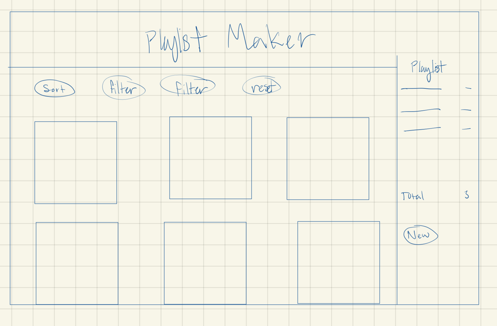

I love music, and I love the different ways different music platforms have different favoriting functions, or different ways to add songs to playlists. By observing different websites and looking at what functions I liked from each one, I was able to incorporate some of these functions in a website where the user can add their favorite songs to a number of playlists.
Through using React, the website created can be found here!
To begin, I first looked at three other sites, and from these sites i evaluted what functions each one had and how it could add to the user experience. Below is the comparison chart I made from them.
The three websites I chose have very different ways to filter and sort through their items. The favoriting functions are also different. While Spotify and Apple Music all store the favorite songs in a playlist and are easily accessible, Ed Stem only allows users to filter out any posts that are favorited. EdStem also has a very clear way to filter out posts. The visual presence of the filters is very clear to see. While Spotify and Apple Music both have ways to explicitly search for songs, the ability to filter is not available, and while Spotify has ways to filter on their mobile app, it is not the most visible, or the most intuitive way to filter. I did notice that Spotify and Apple Music have similar ways of sorting, where at the top of each column you click to sort through the column alphabetically, and so on, however, I did like how you can combine the sorting functions in Spotify.
From these websites, I chose to include features that made the filtering and sorting options very visible, and intuitive. I also included the functionality to combine these so that users can have a less frustrating experience searching for a song.
From these I decided to implement the design of changing the button whether the post, or the item was favorited or not. Thus letting the user know that it was added and that it can be removed with the same button.
Since I knew the theme of the website would be music, I first decided if I wanted the aggregator to be a favoriting fuction, or an add to playlist function. I ultimately decided to have it be an add to playlist function. From there I drew the following lo-fi sketches of layouts that I could use for the website.
I then created this last final sketch which I could create a higher fidelity prototype out of.
From there I decided what colors I would use by using the online source here. I also chose fonts by using the online source here.
After creating the style guide, and having the final sketch I made a high fidelity prototype in figma this is what it looks like.
While I do feel more comfortable using HTML and CSS, adding react was a bit difficult. I have a grasp on how to use react, but using some react elements like the dropdowns, made it a bit more difficult for me to use CSS with them. From this experience I do want to learn more about CSS and make it so that I can customize just about any part of a website that uses react.
Because I wanted to have users make a playlist, I added two filters. One would filter the songs by artist, and the other would filter the songs by genre. Since most people have a favorite artist, or seem to know what kind of artists they like, and the same can be said for the genre of songs, this felt the most natural way to filter song choices.
For sorting through the songs I made it so that there is a way to alphabetically sort for titles and artists, and then I also chose to sort by song length. Chosing to sort alphabetically for titles and artists felt most intuitve for me since many other music platforms have that feature, and I added in the sorting by length so that if a person want to have a decently shorter, or longer, playlist they could choose songs that best fit that requirement.
I feel like I learned a lot from this project. I was able to get a lot of practice using react, and I was also able to practice my CSS skills. I'm still not quite satisfied at my skill level with CSS or react, and I hope to become more proficient at using them with smaller projects. Again, to start making playlists go to this website here!